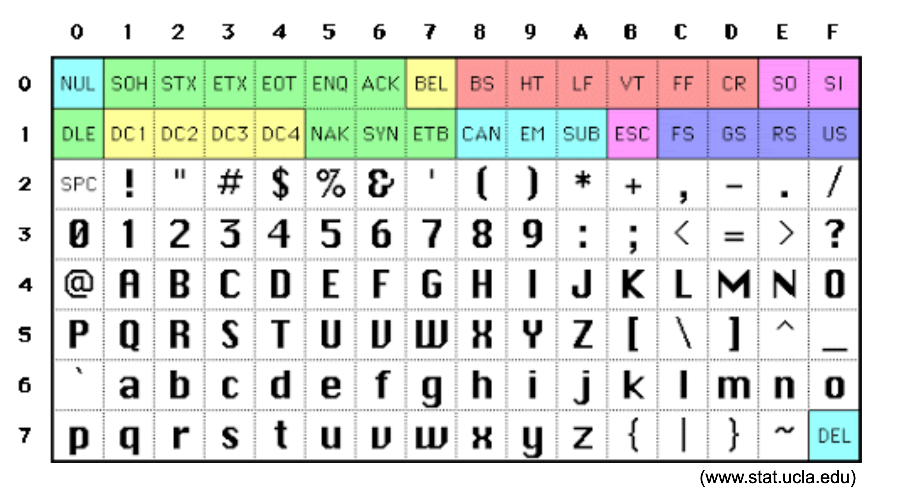

1.3 Characters¶
As I said before, we can represent everything in the computer using patterns of binary digits.
This includes characters - codes that indicate a shape that we print on a page or display on a screen. Characters are probably the most common entities that are stored and manipulated in computers. We use them in documents, web pages, notifications, presentations, books and so on. They are the mechanism we use to communicate between humans and computers and so are incredibly important.
In the early days of computers we mainly used print. Messages from the computer were printed on paper. But today most interaction is via graphics on screens. This gives great flexibility but also makes the discussion of character representation in binary a lot more complicated.
The graphical representation of a character is sometimes called a “grapheme” and I’ll use that term to describe what the character looks like when displayed. This can get very confusing because there are usually many representations of a character that can be displayed - multiple fonts, multiple font sizes etc. These different graphical representations are usually called “allographs” of the grapheme.
To avoid some of the confusion I will just refer to the graphemes as characters. Characters can have multiple graphical representations (fonts, size etc) on the screen, but I will cover that aspect of the representation separately. But, there is still some confusion because many languages draw a distinction between upper and lower case versions and use separate representations (codes) for each version. And, of course there are the annotations on characters such as diacritical marks. Then there are languages like Chinese that has thousands of characters in common use. I will start by describing how to represent characters used in English.
Binary patterns to represent characters¶
Since the memory of most computers is divided into 8-bit bytes that are individually addressable, it makes sense that we use a byte to represent a single character. With 8 bits we can represent 256 characters and in normal English this is certainly enough to represent the alphabetic, numeric and special characters. The most commonly used encoding for English characters was developed by the American Standards Association and released in 1963. It is called the American Standard Code for Information Interchange or ASCII. It uses 7 bits and so can represent 128 individual characters. Each group of 7 bits is stored in a single byte, with the 8th bit often used as a method of error detection called a “parity bit”. If the last bit is not used as a parity bit it is set to zero.
Note
The value of a parity bit is calculated by counting the number of 1 bits in the field. If the system uses even parity then the parity bit is set to zero if there are an even number of 1 bits in the field. If the system uses odd parity then the parity bit is set to zero if there are an odd number of 1 bits in the field. This bit can be checked to see if something has changed in the field.
ASCII has codes for upper and lower case alphabetical characters, numbers, space and a selection of “special” characters. These codes use only 95 of the available 128 code values. The rest of the code values are called “control characters” and were originally used as signals to an external device to do something. This is now largely historical, with the exception of the “tab”, “backspace”, “line feed” and “carriage return” characters that indicate where on the screen the next character should appear.
Here is a nice table of ASCII codes produced at UCLA:
For a more complete history of the development of ASCII see the Wikipedia article
Let’s look at some ASCII codes
Character |
Code in binary |
Code in hexadecimal |
Code in decimal |
|---|---|---|---|
A |
01000001 |
41 |
65 |
B |
01000010 |
42 |
66 |
When we compare a variable containing a character with the literal value ‘A’, we are actually comparing the bit pattern in the variable to the bit pattern ‘01000001’.
Non-English Characters¶
Using 7 bits within a byte is plenty of bits to represent the normally used English characters, but once we move to other languages there is the need for vastly more character codes. Even within English there are local variants that require other code patterns, for example the pound symbol used in Britain (£).
In the early days of computers there were many different character encodings in use. These were almost all related to the particular devices being used and the manufacture. When we settled on the 8-bit byte as the standard addressable unit in the computer memory, ASCII became a de-facto universal standard. As computing spread around the world there was a need to represent characters from many languages other than English. There were then many ad-hoc attempts to extend ASCII or use multiple ASCII characters to represent new graphemes. In the 1980s there was a new effort to define a universal standard that would cover all languages and characters. This resulted in the first draft of a universal standard called Unicode.
Note
Wikipedia has an excellent article on the history and details of Unicode
Unicode uses 32 bits/character (4 bytes) and so could theoretically represent over 4 billion characters! Currently (2020) there are over 140,000 characters represented in Unicode that cover more than 150 languages. There are also characters represented in Unicode that are no longer used, except in historical documents.
And there are “emojis” 👏😁👍
😁 has code 1F600 in hexadecimal
😷 has code 1F637 in hexadecimal
For more information about Unicode see the website of the Unicode Consortium
Unicode is amazing. The website calls Unicode “A Global Standard to Support ALL the World’s Languages” and it does that and a lot more. All types of symbols, emojis, grapheme variants etc are covered. However…
The price you pay for representing so many different characters is that each one takes 4 bytes. If you are using language like English with a small and widely used character set your documents are going to increase in size by a factor of 4! So right from the beginning the developers and users of Unicode were thinking about ways to reduce the size of Unicode characters. The solution was to encode the encoding!
Various encodings of Unicode have been developed. The one used almost universily in web pages is called UTF-8. UTF-8 stands for Unicode Transformation Format - 8bit and was developed by engineers in the Unix group at Bell Labs in the early 1990s (Dave Prosser, Ken Thompson and Rob Pike). It is a variable length encoding. It encodes the ASCII characters in single bytes with the same code as ASCII, and other characters in two or more bytes. This allows existing ASCII documents to be interpreted with very little effort, but also allows extended character sets (like emojis 😁) to be represented in the same documents.
Example:
Character |
Unicode (4 bytes hex) |
ASCII (1 byte hex) |
|---|---|---|
A |
00000041 |
41 |
♬ |
0000266C |
|
𓀠 |
00013020 |
Most programming languages now have support for Unicode. For example, Python uses unicode for all character strings. Sometimes it is difficult to enter unicode characters and you may have to have special support for keyboards that include the character you want. Alternatively you could use the HEX code for the character.
Tip
Read the wikipedia entry and Unicode web page about the Unicode system. Experiment to see what characters you can type on your keyboard. Do you need to enter the hex encoding?
Character Sequences¶
Using codes like ASCII or Unicode we can represent single characters inside a computer. But what about sequences of characters? Sentences? Paragraphs?
Sequences of characters or strings are represented as a sequence of characters codes in the memory. Just as the characters of this sentence follow one another, the character codes follow one another in successive bytes of memory.
The only tricky things about strings is how do we know where the string ends? After all, if we are simply interpreting bit patterns in the memory as character codes we might go on until the end of the memory. The string would probably look very strange! It might have emojis and heiroglyphics and other unusual characters. We need to indicate the end of a string somehow.
There are two methods commonly used to represent a string. The first uses an explicit length number stored in the memory as an integer, followed by the character sequence of that length. The second uses a particular bit pattern or code to indicate the end of the string. This code is usually 8 zero bits in a byte, although sometimes other values are used.
Note
In the C programming language the character strings are terminated by a zero byte.
Other features of strings such as line breaks and indentation are indicated by special codes and we saw that in the ASCII character code.
Characters: Video¶
[Prev: 1.2 Numbers][Next: 1.4 Instructions]